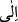
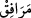
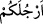
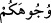

kadar olan mahaldir ki onun tamâmını yıkamak gerekir. Suyu kaşların altına, göz
çukurlarına, bıyıkların, yanak ve dudağın alt tarafındaki kılların altına kesif olsalar dahi
ulaştırmak gerekir.
İmâm-ı A’zam’a göre kılların altını yıkamak gerekmez. Ona göre farz olan, sakalın
aşağı doğru uzanan kısmını değil, yüze bitişen kısmını meshetmektir. Çünkü sakal olunca
altını yıkama yükümlülüğü düşer ve bu farz sakalın üst tarafına intikal eder. Mazmaza
ve istinşak, abdestin vâciplerinden değildir. Çünkü burada “yüz” ile kastedilen onun dış
tarafıdır içi değil. Bu ikisi, sünnettir.
“Dirseklere kadar ellerinizi” yıkayın. Cumhura göre kolları yıkarken dirsekleri de
dâhil etmek gerekir. Buna göre âyetteki “__WORD__” harf-i cerri, berâber mânâsına gelen “ __WORD__ ”anlamındadır. Nitekim bu durum şu âyette de aynıdır: “Yetimlerin mallarını kendi
mallarınıza katarak yemeyin.” (Nisâ, 4/2) -“__WORD__”, “__WORD__”ın çoğuludur ki o, elden
dirseğe kadar olan kısımla pazunun birleştiği yerdir. Ona “dirsek” denilmiştir. Çünkü el
tarafından onun üzerine dayanılır.
“Başlarınızı meshedin.” Mesh, eli dokundurmak, demektir. Ebû Hanîfe’ye göre
meshin farz olan miktarı başın dörtte biridir. Çünkü Rasûlullah (s.a.v.) başının üst
kısmını meshederdi. Bu da başın dörtte birine yakındır. Başın dört ciheti vardır. Bunlar;
nâsiye (başın üst kısmı), arkası ve iki yanlarıdır.
Mahmûd Hüdâyî Hazretleri Vâkıât adlı eserinde şöyle der: Üftade Hazretleri:
“Başın üst kısmından ne kadarına meshedileceği konusundaki ihtilâfın sebebi bana
keşfen malum oldu. Şöyle ki, insan bedeni bir bakıma dört köşedir. Buna kıyasla
diyebiliriz ki, başın dörtte birini meshetmek gerekir. Başın üç parmak mikdarı
meshedilmesi gerektiği görüşü ise başın şekline göredir. Çünkü baş, altıgendir. Onun
altıda biri üç parmak miktarıdır.” demektedir.
Mahmûd Hüdâyî Hazretleri devamla der ki: “O zaman son değerlendirmenin (yani
başın üç parmak miktarı meshedilmesi) daha uygun olması gerekir. Çünkü onda bedene
kıyâsen olan birinci görüşün aksine başın kendi dikkate alınmaktadır. Şeyh Üftâde
Hazretleri ise birinci görüşün evlâ olmasını, bedenin baştan daha büyük olmasına
bağlar. Az olanın çoğa tâbi olması daha uygundur. “el-Vâkıât”tan yapılan nakil burada
bitti.
Haddâdî şöyle demiştir: “Kulakların meshedilmesi sünnettir. Kişi baş parmaklarıyla
kulaklarının dışlarını, işâret parmakları ile de içlerini mesheder, bunu da başı
meshettiği su ile yapar. Boynun meshi ise müstehabdır.” Bir hadiste şöyle
buyurulmuştur: “Kim abdestte boynunu meshederse, kıyâmet günü şiddetli susuzluktan
emin olur.”[255]
“Topuklara kadar ayaklarınızı yıkayın.” Ayaklarınız anlamındaki “__WORD__” kelimesi,
yüzleriniz anlamındaki “__WORD__” kelimesine atıfla mansub getirilmiştir. Bunu yaygın
sünnet, sahâbenin uygulaması ve imamların çoğunun görüşü de desteklemektedir. Âyette
ayaklarla ilgili “topuklara kadar” şeklindeki sınırlama da bunu teyid etmektedir. Çünkü